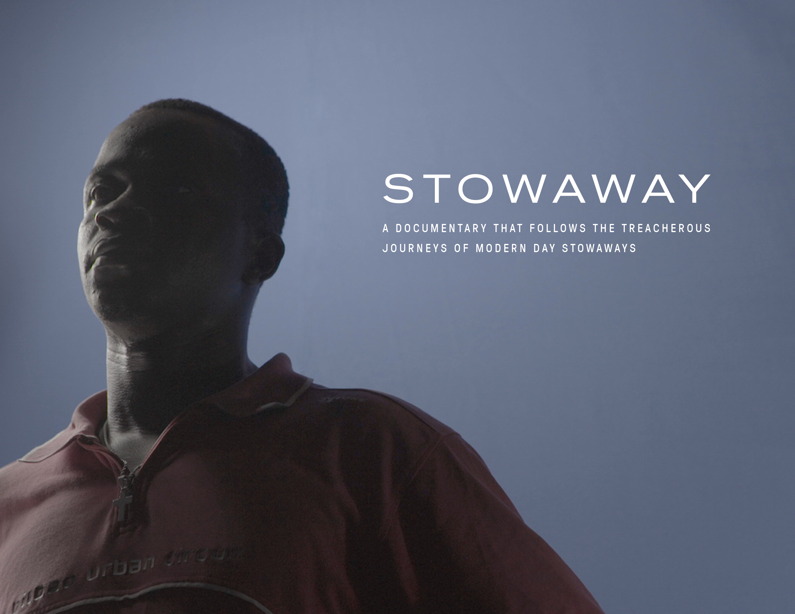

VESPUCCI
Vespucci Group is a film, television, and multimedia content engine. Based in Los Angeles and New York, we incubate fact-based stories from around the world through a global consortium of journalists. Vespucci Group knows that universal stories emerge from everywhere, and through our partnership with skilled and passionate correspondents we are uniquely positioned to develop source material into long-form audiovisual content for an international audience.
We currently have partnerships with journalists based in Brazil, Israel, Italy, Cameroon, Ghana, U.K., U.S., Canada, India, Argentina, Switzerland and more … our network is constantly expanding.
We currently have partnerships with journalists based in Brazil, Israel, Italy, Cameroon, Ghana, U.K., U.S., Canada, India, Argentina, Switzerland and more … our network is constantly expanding.
(IN DEVELOPMENT) - BLUE SKY is a crime TV series based on the best selling book Confessioni di un trafficante di uomini (Confessions of a People Smuggler) by renowned journalist Giampaolo Musumeci and criminologist Andrea Di Nicola, Phd. The book chronicles the current migration crisis in Europe as told from the viewpoint of people smugglers. Claudio Cupellini (GOMMORAH) is attached to direct the pilot and Indiana Productions is co-producing with Vespucci. Marc Forster is Executive Producing.
- (IN DEVELOPMENT) - CONVICTIONS is a mini series based on the best selling book Convictions: My life with a good communist by Jo Langer. The novel is based on the true story of Jo Langer's survival during the 1950s in Czechoslovakia when her husband, a respected party-member, is arrested and imprisonned for being a traitor, and her life begins to fall apart. This is powerful story of a courageous, intelligent and powerful woman who did everything she could to save her children and husband during a brutal time. It’s an intimate story with monumental historical moments guiding the narrative. Tereza Nvotova (FILTHY) is attached to direct.
(IN DEVELOPMENT) - DONALD & THE WHALE is feature documentary which combines live action and anime to examine the rise and fall of Donald Trump’s Atlantic City empire in the late 80’s and early 90’s. Academy Award nominated filmmaker Kief Davidson (IVORY GAME) is attached to direct and Ross Dinerstein (JIRO DREAMS OF SUSHI, SILICON COWBOYS) is producing alongside Vespucci Group.
(IN PRE-PRODUCTION) - BLOCH SPACE is a short animated film. We have partnered with multiple journalists and mathematicians to recount the extraordinary life of the infamous French mathematician. Devon Manney (CRADLE) is animating and directing.

(IN POST-PRODUCTION) - STOWAWAY is a feature documentary that follows the treacherous journeys of modern day stowaways. Collaborating with journalists from Brazil and Cameroon, we uncover a community of men that regularly steal aboard cargo ships in the hopes of bettering their circumstance.
Daniel Turcan
Principal
dt@vespuccigroup.com
Johnny Galvin
Principal
jg@vespuccigroup.com
To access our latest stories and content from around the world click:
Subscribe